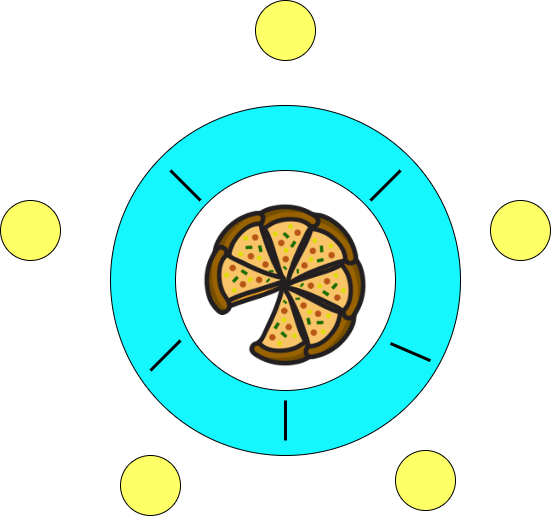
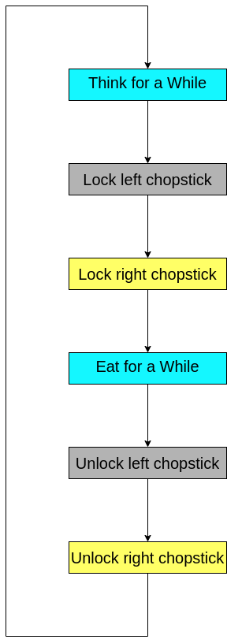
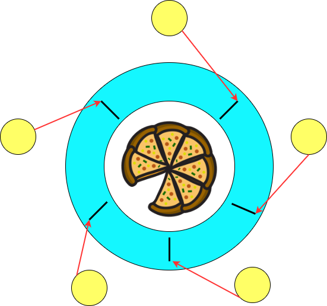

Dining Philosopher's Problem
Introduction
The Dining Philosophers Problem is a classical synchronization problem in operating systems that demonstrates the challenges of allocating limited resources among multiple competing processes. It was first introduced by Edsger Dijkstra as a way to understand and solve problems related to resource sharing and process synchronization.
The problem illustrates how a lack of proper coordination can lead to critical issues such as:
- Deadlock – A situation where no process can proceed because each is waiting for the other to release a resource.
- Starvation – A process is perpetually denied access to resources.
- Resource Contention – Multiple processes competing for limited resources, leading to conflicts.
A virtual lab simulation of the Dining Philosophers Problem helps students visualize these issues and understand how synchronization mechanisms like mutexes and semaphores can be used to prevent them. By interacting with the simulation, learners can explore different synchronization strategies and observe how improper handling can result in unsafe scenarios.

Real-World Example of Dining Philosophers Problem in Operating Systems
The Dining Philosophers Problem is not limited to an abstract dining table—it closely resembles real-world scenarios in operating systems, where multiple processes compete for limited resources. This analogy is especially useful in understanding issues related to resource allocation, synchronization, and deadlock prevention.
Scenario
Consider a multi-threaded operating system where multiple processes (representing philosophers) need to access shared resources (representing chopsticks) such as:
- Disk drives
- Network ports
- Memory blocks
- File locks
Just like philosophers who need two chopsticks to eat, these processes may need to acquire two or more resources simultaneously to perform a task.
For example:
- A process may require access to a disk drive and a network port to complete a file transfer.
- Another process may require access to a disk drive and a memory block to load a file.
Potential Problems Without Synchronization
1. Deadlock
Deadlock occurs when two or more processes wait indefinitely for each other to release resources.
Example:
- Process A locks the disk drive and waits for the network port.
- Process B locks the network port and waits for the disk drive.
- Neither process can proceed → Deadlock.
2. Starvation
Starvation happens when a process is perpetually denied access to resources due to continuous preference given to other processes.
Example:
- A high-priority process keeps acquiring the disk drive.
- A low-priority process keeps waiting endlessly.
3. Livelock
In livelock, processes continuously change their state in response to each other but fail to make progress.
Example:
- Process A releases the disk drive → Process B acquires it.
- Process B releases the network port → Process A acquires it.
- This cycle repeats without either process completing its task.
How Operating Systems Handle This Problem
Resource Ordering
The OS enforces a fixed order for resource acquisition to prevent circular wait conditions.
- A process must acquire the disk drive before the network port.
- If it requests out of order, the OS denies the request.
Result:
Prevents cyclic dependency → Avoids deadlock.
Semaphores and Mutexes
Semaphores and mutexes are used to synchronize access:
- Semaphore controls how many processes can access a resource.
- Mutex ensures that only one process accesses a resource at a time.
Example:
- A mutex protects the disk drive → Only one process can write.
- A semaphore manages network ports → Up to two processes can read simultaneously.
Result:
Prevents race conditions → Ensures data consistency.
Timeouts
The OS sets a timeout for resource acquisition.
If a process cannot acquire a resource within the timeout period:
- It releases any resources it holds.
- Retries after a delay.
Example: Process A requests the disk drive → Waits for 5 seconds → If unavailable → Releases and retries.
Result:
Prevents indefinite blocking → Avoids deadlock and livelock.
Priority Inversion Handling
When a low-priority process holds a resource needed by a high-priority process, the OS temporarily increases the priority of the lower process to avoid blocking.
Example:
- Process A (low priority) holds the disk drive.
- Process B (high priority) needs it.
- OS temporarily raises Process A’s priority → Allows it to finish → Process B gets access.
Result:
Prevents priority inversion.
Banker's Algorithm for Resource Allocation
The OS uses the Banker's Algorithm to check if allocating requested resources will lead to an unsafe state.
Example:
- Process A requests the disk drive and network port.
- OS checks future state → If deadlock is possible → Denies request.
Result:
System remains in a safe state → Prevents deadlock.
Analysis
First, we notice that these philosophers are in a thinking-picking up chopsticks-eating-putting down chopsticks cycle as shown below.
The "pick up chopsticks" part is the key point. How does a philosopher pick up chopsticks? In a program, we simply print out messages such as "Have left chopstick", which is very easy to do. The problem is each chopstick is shared by two philosophers and hence a shared resource. We certainly do not want a philosopher to pick up a chopstick that has already been picked up by his neighbor. This is a race condition.
To address this problem, we may consider each chopstick as a shared item protected by a mutex lock. Each philosopher, before he can eat, locks his left chopstick and locks his right chopstick. If the acquisitions of both locks are successful, this philosopher now owns two locks (hence two chopsticks) and can eat. After finishing eating, this philosopher releases both chopsticks and returns to thinking. This execution flow is shown below.

Because we need to lock and unlock a chopstick, each chopstick is associated with a mutex lock. Since we have five philosophers who think and eat simultaneously, we need to create five threads, one for each philosopher. Since each philosopher must have access to the two mutex locks that are associated with its left and right chopsticks, these mutex locks are global variables.
Discussion
Key Considerations in Resource Allocation and Deadlock Prevention
Fixed vs. Dynamic Resource Allocation
Resources can be pre-assigned to specific entities or allocated dynamically. A dynamic approach involves searching for available resources, adding realism but increasing complexity.
Order of Resource Acquisition and Release
Enforcing a strict sequence for acquiring resources simplifies management. The order of releasing resources is often flexible and may not affect functionality.
Risk of Deadlock
Deadlock occurs when entities lock resources in a circular dependency. If every entity acquires a resource and waits for another that is already taken, progress halts.
Deadlock Prevention
Introduce ordering in resource allocation to avoid circular waiting. Use algorithms like timeouts, priority-based allocation, or breaking the cycle dynamically.

What if every philosopher sits down about the same time and picks up his left chopstick as shown in the following figure? In this case, all chopsticks are locked and none of the philosophers can successfully lock his right chopstick. As a result, we have a circular waiting (i.e., every philosopher waits for his right chopstick that is currently being locked by his right neighbor), and hence a deadlock occurs.
Starvation is also a problem!
Imagine that two philosophers are fast thinkers and fast eaters. They think fast and get hungry fast. Then, they sit down in opposite chairs as shown below. Because they are so fast, it is possible that they can lock their chopsticks and eat. After finishing eating and before their neighbors can lock the chopsticks and eat, they come back again and lock the chopsticks and eat. In this case, the other three philosophers, even though they have been sitting for a long time, have no chance to eat. This is starvation. Note that it is not a deadlock because there is no circular waiting, and everyone has a chance to eat!
The above shows a simple example of starvation. You can find more complicated thinking-eating sequences that also generate starvation.
Conclusion
The Dining Philosophers Problem is an elegant abstraction of real-world challenges in resource allocation and process synchronization.
Modern operating systems implement various techniques such as semaphores, mutexes, timeouts, resource ordering, and priority handling to ensure:
- Smooth sharing of resources
- Deadlock and starvation prevention
- Efficient process execution
Understanding this problem builds a strong conceptual foundation for advanced operating system concepts.